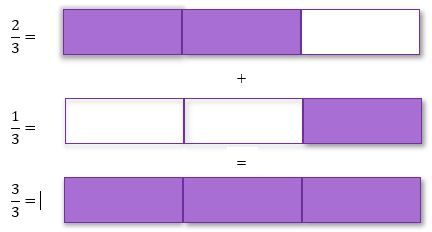

Menjumlahkan pecahan biasa yang memiliki penyebut dengan angka yang sama dapat dilakukan dengan cara menjumlahkan pembilangnya saja seperti berikut.
Contoh:
Nina membeli \[\frac{2}{3} kg\] buah langsat. Tetapi mengingat teman-temannya akan datang ke rumah, Ia membeli lagi \[\frac{1}{3} kg\] buah langsat. Berapa kg berat langsat keseluruhan?
Penyelesaian:
\[\frac{2}{3}\] + \[\frac{1}{3}\] = \[\frac{3}{3}\] = 1 kg
Penyelesaian diatas dapat diilustrasikan menggunakan pita Pecahan berikut.

hasil dari penjumlahan \[1\frac{3}{6}\] + \[4\frac{5}{6}\] adalah?
Namun apabila pecahan yang akan dijumlahkan memiliki penyebut dengan angka yang berbeda maka hal pertama yang harus dilakukan adalah menyamakan penyebut agar kedua pembilang memiliki angka penyebut yang sama.
Contoh:
hitunglah hasil dari \[\frac{1}{2}\] + \[\frac{1}{4}\]
Penjumlahan pecahan berpenyebut sama dapat dilakukan dengan menjumlahkan pembilangnya dan penyebutnya tetap
Penjumlahan Pecahan berpenyebut tidak sama dapat dilakukan dengan menyamakan penyebutnya terlebih dahulu. Kemudian, menjumlahkan pembilangnya dan penyebutnya tetap
Pengurangan Pecahan
Pada prinsipnya, konsep pengurangan pecahan biasa sama dengan konsep penjumlahan pecahan biasa, dimana Anda tinggal mengurangi pembilangnya saja. Contoh:
hitunglah hasil pengurangan dari \[\frac{5}{10}\] - \[\frac{3}{10}\]
Namun apabila pecahan yang akan dikurangi memiliki penyebut dengan angka yang berbeda maka hal pertama yang harus dilakukan adalah menyamakan penyebut agar kedua pembilang memiliki angka penyebut yang sama.
Contoh:
hitunglah hasil dari \[\frac{3}{4}\] - \[\frac{3}{8}\]
Pengurangan pecahan berpenyebut sama dapat dilakukan dengan mengurangkan pembilangnya dan penyebutnya tetap
Pengurangan Pecahan berpenyebut tidak sama dapat dilakukan dengan menyamakan penyebutnya terlebih dahulu. Kemudian, mengurangkan pembilangnya dan penyebutnya tetap
mari mencoba
1 dari 2
Lengkapilah langkah-langkah penjumlahan dan pengurangan pecahan berikut.
\[\frac{3}{8} + \frac{3}{4} + \frac{3}{5} =...\]
Penyebut ketiga pecahan adalah 8, 4, dan 5. bilangan yang habis dibagi 8, 4, dan 5 adalah 40. penyebut ketiga pecahan disamakan menjadi 40.
2 dari 2
ibu mempunyai satu buah kue bingka kemudian di berikan \[\frac{1}{5}\] kepada andi dan 10% dari sisa kue diberikan kepada siti. berapa sisa kue yang dimiliki ibu?
penyelesaian:
1 dari 2
tentukan hasil penjumlahan dan pengurangan berikut.
note: semua jawaban memakai pecahan biasa
petunjuk: klik tombol buat untuk mengganti soal dan klik tombol cek untuk memeriksa jawaban
=
2 dari 2
Pak budi mempunyai satu bidang tanah. Sepertiga dari luas tanahnya digunakan untuk bangunan, 25% nya untuk kolam ikan papuyu, dan sisanya untuk kebun ramania. Berapa bagian tanah yang digunakan untuk kebun buah ramania?.